PRECISÃO
QUE SE VÊ.
Distribuidora oficial da SOTAX no Brasil. Equipamentos, serviços técnicos e treinamentos para o controle de qualidade farmacêutico.
Distribuidora oficial no Brasil desde 2021
Parceria técnica em serviços
Atendimento técnico em todo o Brasil.
Áreas de atuação
Equipamento e serviço técnico em um só parceiro.


Encontre o equipamento.
Por uso
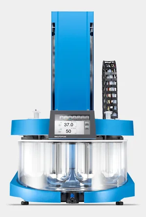
SOTAXAT XtendDissolução USP 1/2/5/6 · manual

SOTAXATS XtendDissolução USP 1/2/5/6 · semiautomático
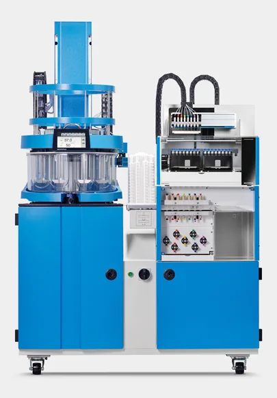
SOTAXATF XtendDissolução USP 1/2/5/6 · automático

SOTAXCE 7smartDissolução USP 4 · célula de fluxo
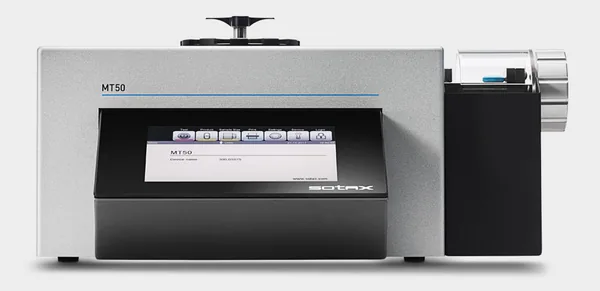
SOTAXMT50Dureza · manual
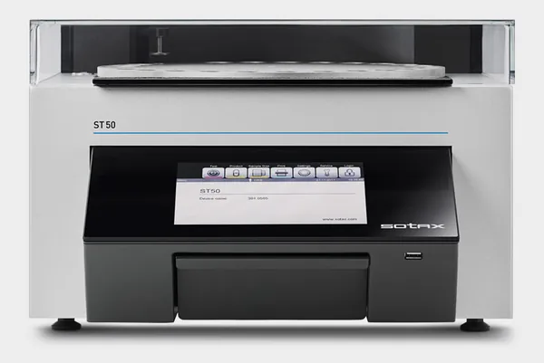
SOTAXST50Dureza · semiautomático

SOTAXAT50Dureza · automático

SOTAXDT50Desintegração · automático
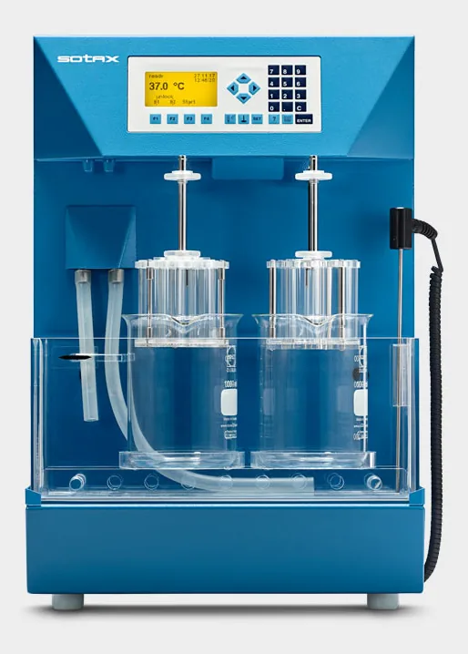
SOTAXDT2Desintegração · manual
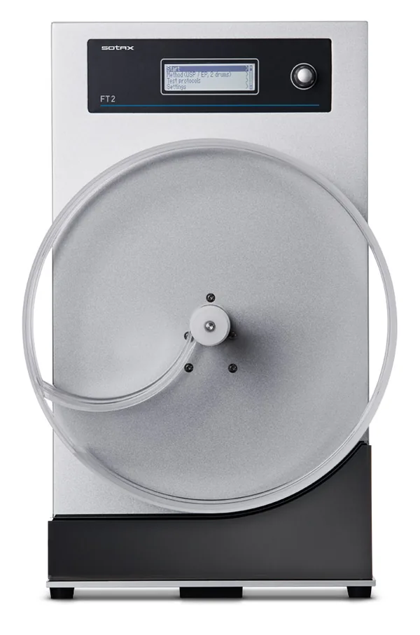
SOTAXFT2Friabilidade
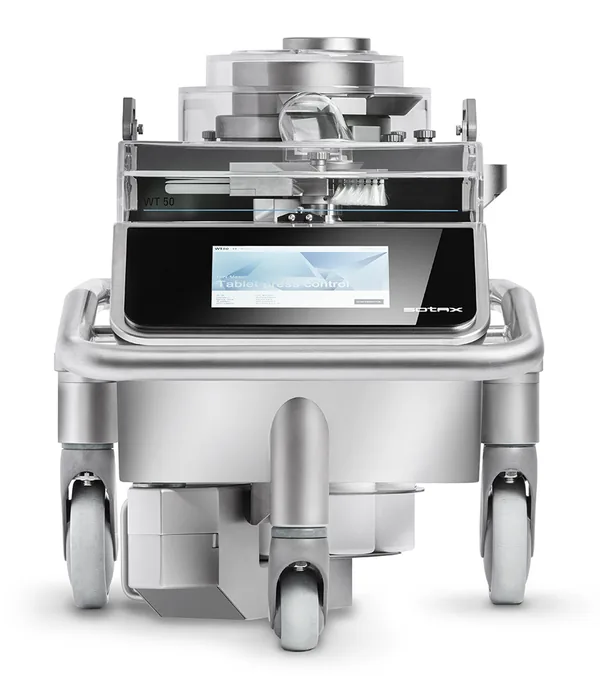
SOTAXWT50Peso
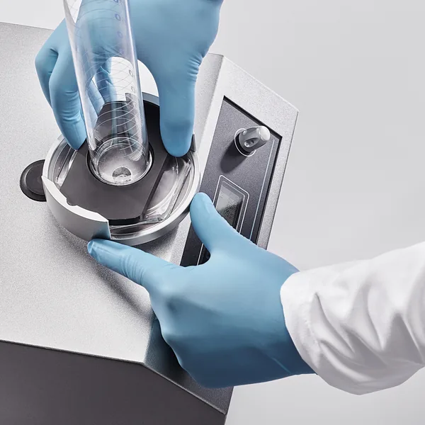
SOTAXTD1Densidade compactada
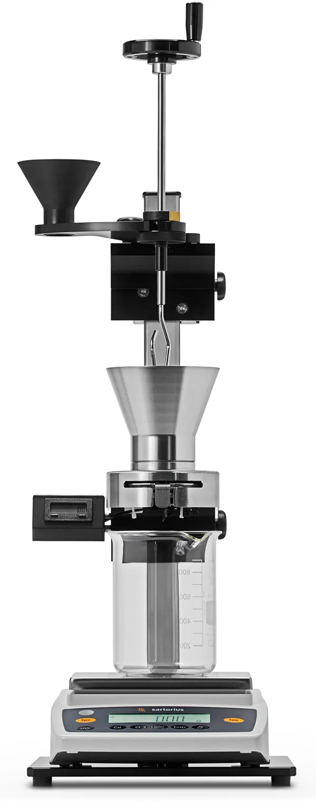
SOTAXPF1Fluidez de pós
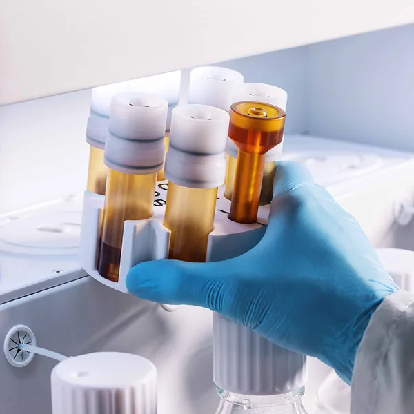
SOTAXJetX MultiFlowPreparo de amostra · extração
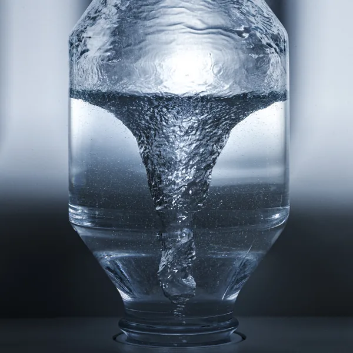
SOTAXJetX SingleFlowPreparo de amostra · extração
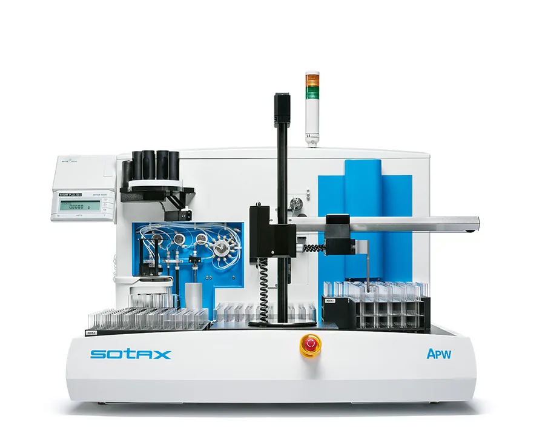
SOTAXAPWEstação de preparo de amostras
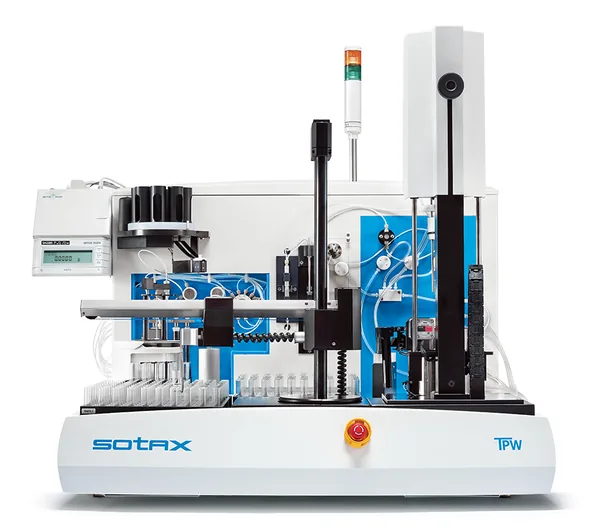
SOTAXTPWEstação de preparo para comprimidos

SOTAXq-docIntegridade de dados · trilha de auditoria
SOTAXWinSOTAXplusControle de dissolução
SOTAXMDsoftControle de testes físicos
FOTO A RECEBER
SOTAXTPWsoftControle da estação TPW
FOTO A RECEBER
SOTAXAPWsoftControle da estação APW
Nenhum resultado para essa combinação.
QUALIFICAÇÃO
IQ · OQ · PQ · PVT
Documentação padronizada, entregue pronta para arquivo.
Conformidade
Qualificação documentada para a auditoria, sem sobressaltos.
A evidência já está pronta quando o auditor pede.
- Equipe treinada diretamente na SOTAX e na Waters.
- Calibração RBC com rastreabilidade metrológica.
- IQ, OQ e PQ documentados, prontos para arquivo.
- Plano de manutenção montado para o seu parque.
USP <711>Ph. Eur.21 CFR Part 11ANVISARBC
Solicitar cronograma de qualificação
Quem confia
Laboratórios de controle de qualidade em todo o país.
XXlaboratórios atendidos
logo de cliente
logo de cliente
logo de cliente
logo de cliente
logo de cliente
logo de cliente
- Desde 2021Distribuidora oficial da SOTAX no Brasil
- 25 anosde parceria com a Waters
- BrasilAtendimento técnico em todo o país
Conteúdo técnico para quem responde pela qualidade.
Dissolução na prática
Guia de escolha de aparato
Cesta, pá ou célula de fluxo: o que o método pede.
Qualificação e metrologia
Checklist de auditoria
O que deixar pronto antes da visita do auditor.
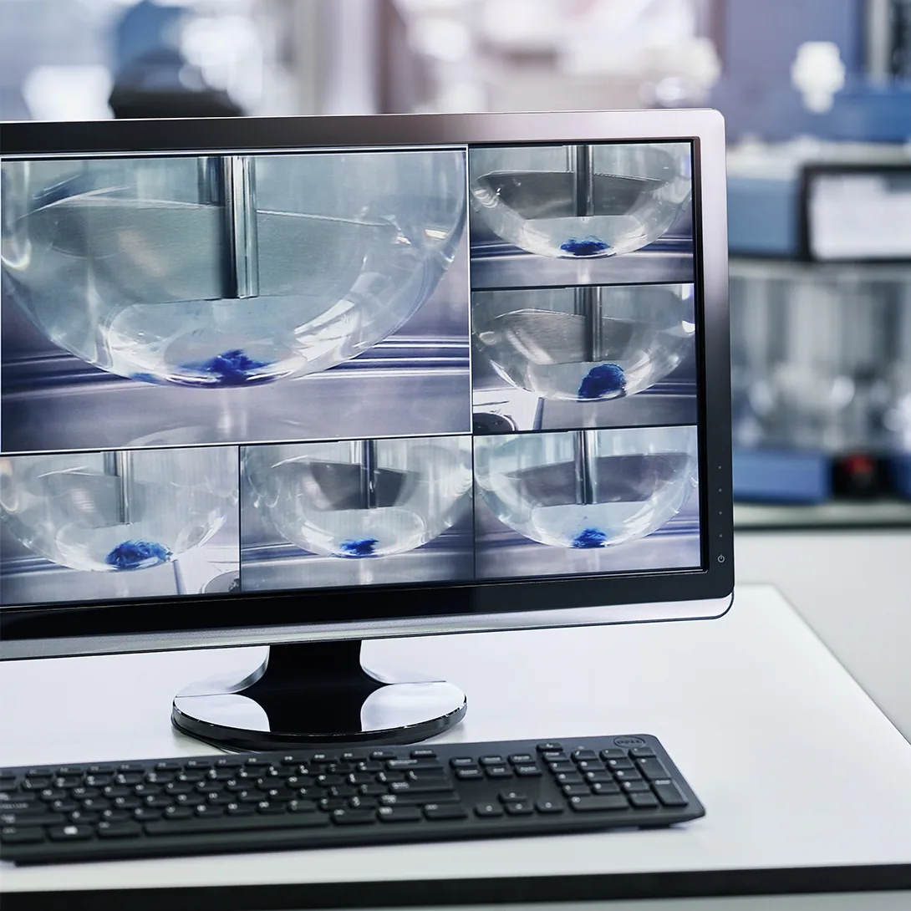
Manutenção e qualificação
Plano anual de manutenção e qualificação
Modelo para organizar o calendário do parque instalado.
Treinamento
Receber aviso da próxima turma
Operação e boas práticas em dissolução
Contato
Vamos entender a sua demanda.
Conte o equipamento, o ensaio ou o problema. Um especialista da área responde.
Qual é o assunto?
Escolha o contexto para chegar ao especialista certo.
Nome
Empresa
E-mail corporativo
Telefone
Equipamento, ensaio ou demanda